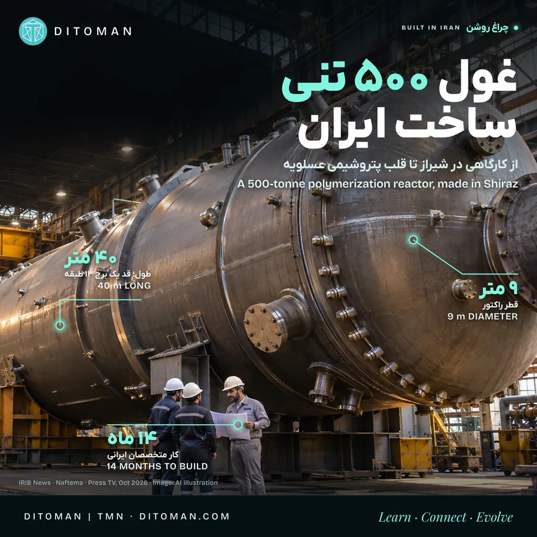

غول ۵۰۰ تنی ساخت ایران؛ از کارگاه شیراز تا قلب صنعت پتروشیمی
A 500-tonne giant made in Iran: from a Shiraz workshop to the heart of the petrochemical industry
A polymerization reactor of about 500 tonnes and 40 metres, built by Fateh Sanat in Shiraz for a petrochemical complex in Asaluyeh: what is confirmed, what it is worth, and who is behind it.
راکتور پلیمریزاسیونی حدود ۵۰۰ تن وزن و ۴۰ متر طول، که فاتح صنعت در شیراز برای یک مجتمع پتروشیمی در عسلویه ساخته است: چه چیزی تأیید شده، چه ارزشی دارد و چه کسانی پشت آن هستند.
تصور کنید سازهای فولادی، تقریباً به طول یک ساختمان ۱۳ طبقه، باید ساخته شود؛ سازهای با وزن حدود ۵۰۰ تن که قرار است در قلب یک واحد پتروشیمی کار کند.
طبق گزارشهای منتشرشده در مهر ۱۴۰۵، چنین راکتوری به دست متخصصان ایرانی در کارگاه شرکت فاتح صنعت در شیراز ساخته شده و برای انتقال و نصب در عسلویه آماده است. طبق این گزارشها راکتور حدود ۴۰ متر طول و ۹ متر قطر دارد، ساختش حدود ۱۴ ماه طول کشیده و برای آن ورقهای فولادی تا ضخامت حدود ۳۱۰ میلیمتر نورد شده است. برخی گزارشها کارفرما را پتروشیمی آریاساسول معرفی کردهاند؛ گزارش رسمی، نام کارفرما را نیاورده است.
مهدی قطبی، مدیر شرکت سازنده، گفته این راکتور کاملاً به دست متخصصان ایرانی ساخته شده و به گفتهی او پیش از این فقط ژاپن، آلمان و چین فناوری ساخت چنین راکتوری را داشتند. این ادعای سازنده است و ما فهرست مستقلی از کشورهای سازندهی این اندازه از راکتور پیدا نکردیم.
این سازه فقط یک مخزن بزرگ نیست. نامش راکتور پلیمریزاسیون است؛ تجهیزی که در آن، مواد اولیه طی یک فرایند کنترلشده به پلیمر تبدیل میشوند.
۰۱. راکتور چه ربطی به زندگی ما دارد؟
پلیمرها خانوادهی بزرگی از موادند که در زندگی روزمرهی همهی ما حضور دارند: از لولههای آب و بستهبندی مواد غذایی تا قطعات خودرو، عایق سیم و کابل و بعضی تجهیزات پزشکی. برای نمونه، پلیاتیلن که آریاساسول تولید میکند، در فیلم بستهبندی، لوله، مخزن و عایق کابل به کار میرود.
راکتور یکی از بخشهای مهم فرایند تولید این مواد است. درون آن، شرایطی مانند دما و فشار باید بهدقت کنترل شود تا واکنش شیمیایی بهشکل ایمن انجام شود و محصول کیفیت لازم را داشته باشد. هرچه راکتور بزرگتر باشد، ساختش به نورد ورقهای ضخیمتر، جوشکاری دقیقتر و بازرسی سختگیرانهتری نیاز دارد.
هنوز در گزارشهای در دسترس، نوع دقیق پلیمر، فشار کاری، ظرفیت تولید و مشخصات فرایندی این راکتور بهروشنی اعلام نشده؛ بنابراین نمیشود گفت این دستگاه مشخصاً مواد اولیهی کدام کالاها را تولید میکند.
۰۲. این پروژه چطور میتواند برای ایران ارزش ارزی ایجاد کند؟
اینجا باید سه مسیر را از هم جدا کنیم:
- کاهش نیاز به واردات: اگر یک مجتمع ایرانی بهجای خرید راکتور خارجی، نمونهای قابلقبول را از سازندهی داخلی تهیه کند، بخشی از ارزی که برای خرید خارجی لازم بود در کشور میماند. به گفتهی سازنده، قیمت پیشنهادی شرکتهای خارجی برای تجهیز مشابه حدود چهار برابر هزینهی ساخت داخلی بوده است. ما به قراردادها و جزئیات قابل مقایسه دسترسی نداریم؛ صرفهجویی واقعی باید پس از کسر هزینهی مواد، قطعات، خدمات و تجهیزات وارداتی حساب شود.
- درآمد ارزی از صادرات تجهیزات: اگر سازندهی ایرانی بتواند تجهیز مشابه، خدمات مهندسی، قطعات یا خدمات تعمیر و نگهداری را به مشتری خارجی بفروشد، این فروش ارز وارد کشور میکند. طبق گزارش «میز انرژی»، گروه سازنده پیشتر پروژههایی در عمان، جمهوری آذربایجان و ترکیه اجرا کرده است؛ این را خودمان تأیید نکردهایم و به معنی صادرات همین راکتور نیست.
- صادرات محصول پتروشیمی: اگر واحد پس از نصب و راهاندازی محصول تولید و صادر کند، فروش آن محصول ارزآوری دارد. برای مقایسه، آریاساسول طبق گزارش ۱۴۰۲ بیش از ۷۰٪ محصولش را به اروپا، آسیا و بازارهای دیگر صادر میکرد. هنوز دادهی کافی نداریم که سهم این راکتور از تولید یا درآمد صادراتی آینده را حساب کنیم.
۰۳. چه کشورهای دیگری چنین تجهیزاتی میسازند؟
طراحی و ساخت راکتورهای صنعتی و تجهیزات سنگین پتروشیمی در کشورهای مختلفی انجام میشود. چند نمونه:
- آلمان: شرکت thyssenkrupp Uhde در طراحی واحدهای پلیمری و تجهیزات فشار بالا فعال است.
- ژاپن: UBE Machinery راکتورهای پلیمریزاسیون و مخازن فرایندی میسازد و Japan Steel Works هم ساخت راکتورهای پتروشیمی را در کارنامه دارد.
- چین: که سازندهی ایرانی هم از آن بهعنوان یکی از دارندگان این فناوری نام برده است.
این مقایسه به معنی یکسان بودن مدلها نیست. راکتورها از نظر اندازه، فشار، جنس و نوع فرایند تفاوت زیادی دارند. برای مقایسهی فنی و قیمتی منصفانه باید مشخصات دقیق دستگاه ایرانی و نمونههای خارجی را کنار هم دید.
۰۴. چقدر ایران را خودکفا میکند؟
ساخت این تجهیز نشاندهندهی توان ساخت یک بخش مهم از تجهیزات سنگین در داخل کشور است؛ اما بهتنهایی به معنی خودکفایی کامل یک واحد پتروشیمی یا کل این صنعت نیست. یک واحد پلیمری علاوه بر راکتور، به طراحی فرایند و لیسانس، کاتالیست، کمپرسور، شیرهای تخصصی، ابزار دقیق، سیستم کنترل و خدمات آزمایشگاهی نیاز دارد.
پرسش مهم برای ادامهی این پرونده: چه سهمی از طراحی، مواد اولیه، قطعات و آزمونهای همین پروژه در ایران انجام شده و چه بخشهایی از خارج آمده است؟ بدون این اطلاعات نمیشود درصد بومیسازی واقعی را اعلام کرد.
۰۵. چه مشاغل و صنایعی پشت چنین پروژهای هستند؟
- مهندسی مکانیک، مواد و طراحی تجهیزات
- نورد و شکلدهی ورقهای فولادی ضخیم، ماشینکاری و جوشکاری تخصصی
- بازرسی فنی، عملیات حرارتی و آزمونهای غیرمخرب
- ساخت فلنج، نازل، قطعات و تجهیزات جانبی
- حملونقل فوقسنگین از شیراز تا عسلویه، نصب و نگهداری
اگر سفارشهای مشابه تکرار شوند، شرکتها میتوانند تجربه و تجهیزاتشان را توسعه دهند، نیروی متخصص تربیت کنند و به بازارهای دیگر هم وارد شوند. دربارهی همین راکتور، تعداد کارکنان و شمار شغلهای مستقیم و غیرمستقیم اعلام نشده و هر عددی در این مرحله حدس است.
۰۶. ساختش چقدر طول کشیده و الان کجاست؟
طبق یک گزارش صنعتی، ساخت حدود ۱۴ ماه طول کشیده است. گزارشهای مهر ۱۴۰۵ میگویند تجهیز برای انتقال و نصب آماده است؛ ما هنوز تأیید مستقلی از حمل، نصب، آزمایش نهایی یا شروع بهرهبرداری پیدا نکردهایم. در یک پست قدیمیتر منتسب به سازنده هم به راکتوری با مشخصات بسیار مشابه برای آریاساسول اشاره شده؛ هنوز روشن نیست هر دو دربارهی همین دستگاهاند یا نه، و به همین دلیل خبر را با تاریخ انتشار گزارشها معرفی میکنیم.
۰۷. چه کسانی پشت این خبرند؟
- فاتح صنعت (سازنده): شرکتی در شیراز که مبدل حرارتی، کولر هوایی، مخزن تحت فشار، برج، بویلر و راکتور برای نفت، گاز و پتروشیمی میسازد؛ طبق یک فهرست تجاری از ۱۳۶۳ فعال است و هدف اعلامشدهاش بومیسازی ساخت تجهیزات است.
- پلیمر آریاساسول (کارفرمای گزارششده): مجتمعی در عسلویه با ۱٫۱ میلیون تن ظرفیت اتیلن و ۷۵۰ هزار تن پلیاتیلن که ۱۳۸۱ با مشارکت ساسول آفریقای جنوبی شکل گرفت و از ۱۳۹۲ کاملاً ایرانی اداره میشود.
پروندهی هر دو شرکت با منبع هر عدد در بخش شرکتهای ایرانی دیتومان آمده است.
۰۸. نگاه دیتومان
اهمیت این داستان فقط در وزن و اندازهی یک سازه نیست. پشت آن پرسش بزرگتری هست: آیا ایران میتواند سهم بیشتری از ارزش صنعت را با طراحی، ساخت، تعمیر و صادرات تجهیزات به دست بیاورد؟ از فروش مواد اولیه تا ساخت تجهیزاتی که مواد اولیه را به محصول تبدیل میکنند، فاصلهای هست که با مهارت، سرمایهگذاری، استانداردهای معتبر، سفارش پایدار و دسترسی به بازار طی میشود.
این پروژه نمونهای از ظرفیت مهندسی ایران است؛ و برای سنجیدن موفقیتش باید عملکرد واقعی، کیفیت، هزینه و توان رقابتش را هم دید. ما این پرونده را با هم دنبال میکنیم و هر خبر تازهی حمل، نصب و راهاندازی را اینجا اضافه میکنیم.
💬 اگر ایران در ساخت تجهیزات پیشرفتهی صنعتی جایگاه محکمتری پیدا کند، مهمترین فرصتش چه خواهد بود: اشتغال، صادرات، انتقال دانش یا کاهش وابستگی؟
منابع
- Press TV: Iranian engineers build 500-ton polymerization reactor for Asaluyeh (نوامبر ۲۰۲۶) • presstv.co.uk
- خبرگزاری صداوسیما: ساخت راکتور بزرگ پتروشیمی در فارس (مهر ۱۴۰۵) • irib-news.ir
- نفت ما: بزرگترین رآکتور پتروشیمی کشور در شیراز ساخته شد • naftema.com
- میز انرژی: گزارش پروژههای گروه سازنده (به نقل پژوهش اولیه؛ متن را خودمان ندیدیم)
- Wikipedia: Arya Sasol Polymer Company؛ Financial Tribune (۲۰۲۳)؛ Plasteurope (۲۰۱۳)
- IranYell و وبسایت فاتح صنعت (fatehsanat.com)
تصویر کاور: تصویرسازی با هوش مصنوعی، نه عکس واقعی راکتور. آخرین بازبینی: ۱۷ آبان ۱۴۰۵